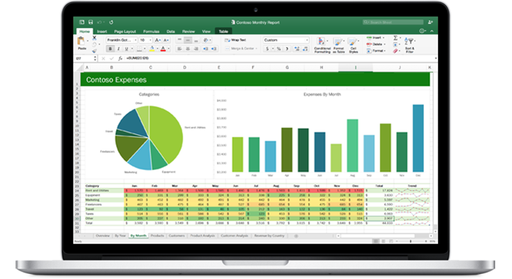

For this project, we needed to enhance the usability of the raw housing data for analysis purposes using SQL Server. The original file contained approximately 57000 rows and 19 columns related to housing. To make the data more manageable, we employed various modifications. These included standardizing the data format, breaking down address columns into individual ones using 'SUBSTRING' and 'PARSENAME', simplifying vague contents to be more understandable, eliminating duplicates, and discarding unused columns.
The data for this project was gathered through an anonymous survey of individuals. The survey covered various aspects, including their job title, annual salary, country of residence, job industry, preferred programming language, gender, education, and overall job satisfaction and happiness.
The focus of this project is to provide global information on Covid-19. The data is sourced from the 'https://ourworldindata.org/covid-deaths' website. Using SQL data exploration techniques, various aspects such as Total Cases vs Total Deaths, the probability of mortality if a person contracts Covid-19 in the United States, Total Covid-19 cases vs Population, Countries with the highest infection rates in proportion to their population, Percentage of the population that has been vaccinated, and the Highest death count per population in each continent have been analyzed. This was done by utilizing Table joins, CTEs, Temp tables, and finally creating a view to aid in future visualizations.

I have created a Tableau dashboard that exhibits various analyses of Airbnb rentals. The dashboard presents the average price per bedroom, price per Zipcode (in the form of a line chart and map), revenue for the year, and the number of distinct bedroom listings.

The information in this Excel file pertains to bike buyers and includes details such as gender, marital status, annual income, occupation, commute distance, age, region, and number of children. The contents have been refined for better usability and the ranges have been formatted to suit the dashboard. The final tab features a Dashboard that presents data on average income per purchase, age brackets of the highest rate of bike buyers (between 32 to 54), and how commute distance relates to the number of people who purchased a bike.
I analyzed a roller coaster data set and conducted an exploratory data analysis. The data set was quite comprehensive, containing information on roller coaster names, locations, manufacturers, introduction year, material type, speed, height, inversions, and more. I made sure to clean the data and remove any duplicates or null values before analyzing it. Using different types of plots, I was able to show the relationships between the different features and even pinpointed where the fastest roller coasters were located.

I recently analyzed a weather dataset that contained important details like date and time, temperature, humidity, wind speed, visibility, pressure, and meteorological conditions. Throughout the project, I carefully cleaned up the data, renamed columns, and extracted key statistical variables like mean, variance, and standard deviation to provide a thorough comparison.